第4章 望远镜 天文学的工具
学习目标
本章的学习将使你能够：
- 概括光学望远镜是如何工作的，并指出折射式和反射式望远镜的优点。
- 解释为什么更大的望远镜能集聚更多的光线并得到更清晰的图像。
- 概述天文望远镜中所使用的一些探测器的用途。
- 描述地球大气如何限制天文观测，天文学家如何克服这些局限。
- 列举射电天文学和光学天文学的相对优势和劣势。
- 说明干涉法如何用于改善天文观测。
- 描述红外望远镜、紫外望远镜和高能望远镜的设计，并解释为什么某些望远镜必须要放置在太空中。
- 说出为什么在电磁波谱的许多不同波长处进行天文观测是非常重要的。
究其核心，天文学是一门观测的科学。通常，对宇宙现象的观测要先于任何明确的对其本质的理论认识。因此，我们的探测设备——我们的望远镜——逐步发展，得以在尽可能宽的波长范围内进行观测。
直到20世纪中叶，望远镜仍仅限于收集可见光。从那之后的技术飞跃，将我们对宇宙的视野扩大到了电磁波谱的所有范围。一些望远镜坐落在地球上，而另一些必须放置在太空中。无论它们是如何建造的，无论它们在哪里运行，望远镜的基本目标都是收集电磁辐射并将它们传输到探测器中，以便进行详细的研究。
4.1 光学望远镜
从本质上说，望远镜就是一个“聚光桶”，它的主要功能就是在天空中给定的区域内捕捉尽可能多的光子，并将它们聚焦成一束光线以进行分析。就像水桶只能收集落入其内的雨水那样，望远镜只能截获落到它上面的辐射。
光学望远镜专门用于收集人眼可见的波长。这类望远镜有着悠久的历史，可以追溯到17世纪早期伽利略所处的时代，在过去四个世纪的绝大多数时间里，天文学家建造的这些仪器主要用于电磁波谱中窄而可见的范围。（2.3节）光学望远镜可能也是最著名的天文硬件设备，因此很适合从它们开始我们的学习。
这一节中提到的各种望远镜设计都源于光学天文，但这些讨论也同样适用于许多旨在捕获不可见辐射的设备，特别是在红外和紫外波段。许多大型地面光学设施也广泛用于红外观测。实际上，许多新近建设的地面天文台都以红外观测作为其主要功能。
折射式和反射式望远镜
光学望远镜分为两种基本类型：折射式和反射式。折射是当一束光线穿过一种透明介质（如空气）进入另一种介质（如玻璃）时发生弯曲的现象。想想一根半浸在一杯水中的吸管看起来弯曲的例子（见图4.1）。吸管当然是直的，但当光线离开水进入空气时，我们看到的光线弯曲了——即折射，所以当光线接着进入我们的眼睛时，我们感觉吸管是弯曲的。

放置在一杯水中的吸管看起来是弯曲的，(a) 因为来自水面下那部分吸管的光线在离开水面进入空气时发生了折射。(b) 因此，在我们眼睛里形成的图像相比吸管真实的位置发生了移动。[R. 麦格纳 (R. Megna) / 基础图片，纽约 (Fundamental, NY)]
折射式望远镜用透镜收集和聚焦光束。图4.2(a)展示了如何利用在棱镜的两面发生的折射来改变光束的方向。如图4.2(b)所示，我们可以把透镜想象成一系列组装起来的棱镜，所有的光线平行于透镜的主轴（穿过透镜中心的虚拟直线）入射，不管光线距离轴有多远，折射后都通过一点，即焦点。主镜到焦点的距离被称为焦距。
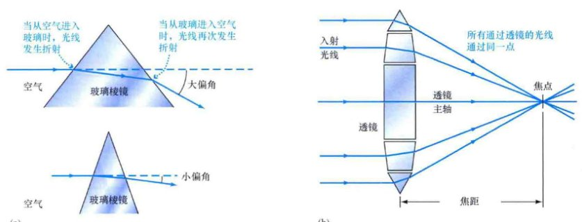(a) 棱镜的折射改变光线的方向，改变的大小取决于棱镜表面的夹角。当两个表面的夹角大时，光线偏转大；当夹角小时，光线偏转小。(b) 透镜可以看作是一系列的棱镜。
图4.3展示了反射式望远镜是如何利用曲面镜代替透镜来聚焦入射光的。如图4.3(a)所示，光线被抛光的镜面反射回来，以与入射角相同的角度离开镜面。反射式望远镜的镜面构造使得所有平行于镜面主轴入射的光线反射后通过焦点（见图4.3b）。在天文学范畴内，聚集入射光的镜面通常被称为主镜，这是因为望远镜常常包含不止一面镜子。主镜的焦点因此被称为主焦点。
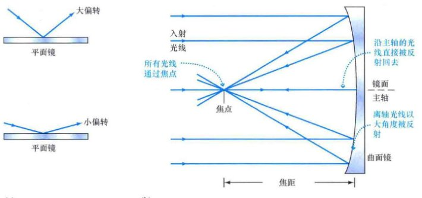(a) 平面镜上发生的反射，当光线被偏转时，偏转大小取决于其入射角。(b) 曲面镜将所有通过平行镜面主轴入射的光线聚焦到一点。箭头指示入射光线和反射光线的方向。
天文望远镜常常被用来获取观测视场（简单地说，就是望远镜可以“看见”的那部分天空）的图像。图4.4以一台反射式望远镜的镜面为例，说明了这是如何实现的。光从遥远的天体（图中是彗星）以平行或非常接近于平行的光线到达我们。所有光线平行于望远镜的主轴进入望远镜，然后与镜面接触并反射通过望远镜的主焦点。方向稍有不同的光线——相对主轴稍有倾斜——会聚焦在略有差别的点上。通过这种方式，在主焦点附近会形成一幅图像。图像上的每一点都对应着视场里不同的点。

当来自遥远天体上不同点的光线通过镜面聚焦在略有不同的位置时，像就形成了。注意，所成的像是倒转的（亦即上下颠倒）。
大型望远镜主焦点上形成的图像实际上相当小——整个视场的像可能仅仅只有1cm的跨度。通常，在用眼睛观测前，或者更有可能的是，在用照相底片或数字图像记录前，望远镜成的像会通过一个被称为目镜的透镜放大。放大后的图像的角直径要远远大于望远镜的视场，能够分辨更多的细节。图4.5(a)展示了一台简单的折射式望远镜的基本设计原理，演示了如何使用一个小目镜来观看通过透镜聚焦成的像。图4.5(b)展示了反射式望远镜是如何实现相同功能的。

折射式望远镜(a)和反射式望远镜(b)的比较。这两种类型的望远镜都是用来收集和聚焦电磁辐射的——由人眼观测或是记录在照相底片或计算机里。这两种望远镜都使用被称为目镜的小型透镜放大望远镜焦点上所成的像后供人观看。
折射镜和反射镜的比较
图4.5所示的两种望远镜设计实现了相同的目的：来自遥远天体的光被接收并聚焦成像。此外，乍看起来，在这两种望远镜之间，决定购买或建造哪种类型似乎区别并不大。然而，随着望远镜尺寸多年来的稳步增长（原因将在4.3节讨论），一些重要的因素倾向于选择反射系统，而不是折射系统。
1) 事实上，光必须通过折射式望远镜的透镜是一个主要的不利条件。就像棱镜将白光色散成不同的颜色成分那样，折射式望远镜里的透镜也会让红光和蓝光聚焦在不同点。这种缺陷被称为色差。精心的设计和材料的选择能在很大程度上弥补这一缺陷，但它是非常难以完全消除的。显然，这样的问题不会发生在镜面上。
2) 当光通过透镜时，其中一些被玻璃吸收了。对可见光辐射来说，这样的吸收是相对微小的问题，但对红外和紫外观测来说，这是很严重的问题，因为玻璃阻挡了电磁波谱在这些波段范围内绝大部分的辐射。然而，这样的问题并不会出现在镜面上。
3) 大的透镜会十分笨重。由于只能绕其边缘进行支撑（这样才能避免阻挡入射的辐射），所以透镜会在自身的重力作用下发生变形。而镜面不会有这样的缺点，因为可以从整个后表面来支撑。
4) 透镜有两个表面，每个面都必须精确地加工和打磨——这实际是非常困难的任务——但是，镜面只有一面。
由于这些原因，所有大型现代望远镜都使用镜面作为主要的光线采集装置。有史以来最大的折射式望远镜有一个直径刚好超过1m (40in) 的透镜，它于1897年被安装在威斯康星州的耶基斯天文台，并且今天仍在使用。相比之下，许多近来建造的反射式望远镜有着直径10m级的主镜，并且还有更大的仪器正在设计建造中。
反射式望远镜的种类
图4.6展示了一些反射式望远镜的基本设计。来自恒星的辐射进入仪器，向下通过主镜筒，投在主镜面上并反射回位于镜筒顶部附近的主焦点。天文学家有时会把记录仪器放置在主焦点上；然而，在这里悬挂笨重的装置会带来不便，甚至也是不可能的。更常见的是，光在传向焦点的路径上被副镜截获并被重新定向到更方便的位置，如图4.6(b)~(d)所示。
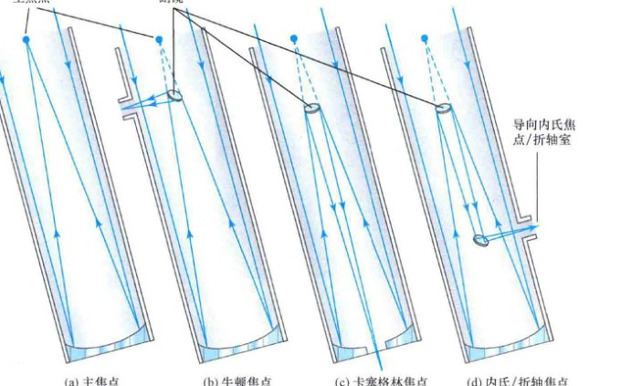四种反射式望远镜的设计：(a) 主焦点 (Prime focus), (b) 牛顿焦点 (Newtonian focus), (c) 卡塞格林焦点 (Cassegrain focus), (d) 内氏/折轴焦点 (Nasmyth/coudé focus)。每种设计都利用望远镜底部的主镜来捕捉辐射，然后将辐射导向不同的路径以进行分析。注意图(c)和图(d)中的副镜实际稍稍有些发散，这样它们可以把焦点移到望远镜之外。
在牛顿式望远镜里（以艾萨克·牛顿爵士的名字命名，他发明了这种独特的设计），光在到达主焦点前被截获，然后被偏转90°，一般情况下导向位于仪器旁边的目镜。这是在小型反射式望远镜中流行的设计，比如那些业余天文学家所使用的望远镜，但在大型仪器中相对罕见。在大型望远镜中，牛顿焦点可能在距离地面很高的地方，这是难以放置仪器（或观测者）的地方。
或者，天文学家可以选择在后置平台上进行工作，在这里，他们可以使用诸如光谱仪之类的仪器，因为光谱仪太重，无法吊装在主焦点处。在这种情况下，主镜反射向主焦点的光被小一些的副镜截获，并将其向下反射穿过主镜中心的小孔。这样的设计被称为卡塞格林式望远镜（以法国镜头制作者基拉姆·卡塞格林命名）。星光最终汇聚到主镜后面的一点，被称为卡塞格林焦点。
更复杂的观测设置需要星光被几个镜面反射。按照卡塞格林的设计，光首先被主镜反射向主焦点，然后被副镜向下反射通过镜筒。接着，小得多的第三块镜面将光反射到望远镜外，在那里（取决于望远镜的建造细节），即内氏焦点（水平焦点），光束由位于内氏焦点上并排安置的探测器进行分析，还可能进一步利用一些镜面将光束导向一个环境可控的实验室中，即折轴 (coudé, 法语单词“弯曲”) 室。实验室本身是独立于望远镜的，使得天文学家可以利用非常沉重和精密的仪器，而这些仪器是不可能放置在其他任何焦点上的（所有这些其他的焦点都必须与望远镜一起移动）。当望远镜跟踪天空中的天体时，这样的镜面安排不会改变光传向折轴室的路径。
为说明其中的一些要点，图4.7(a)展示了夏威夷莫纳克亚山上凯克天文台的两台10m直径的孪生光学/红外望远镜，它们由加州理工学院和加州大学共同运行。图4.7(b)画出了光路和一些焦点。依据用户的需求，观测可利用卡塞格林焦点、内氏焦点或折轴焦点进行。按照图4.7(c)中所显示的人的大小，这确实是一台非常巨大的望远镜——实际上，这两个镜面都是地球上最大的镜面之一。我们将在本书中见到凯克望远镜的众多重要发现。

(a) 凯克天文台的两台10m望远镜。(b) 望远镜、入射光束的光路和一些可能放置仪器的位置的艺术说明图。(c) 其中一面10m主镜。（其奇怪的形状将在5.3节中说明。）注意中心穿橙色工作服的技术人员。[W. 凯克天文台 (W. M. Keck Observatory)]
也许地球上（或地球附近）最著名的望远镜是哈勃太空望远镜 (HST)，简称哈勃望远镜，它以美国最著名的天文学家之一，埃德温·哈勃命名。它在1990年由美国宇航局的发现号航天飞机放置到地球轨道上，至今（到2013年）仍在运行，HST是一台卡塞格林式望远镜，所有的仪器都直接放置在2.4m主镜的后面，如图4.8(a)所示。望远镜的探测器能够在光学、红外和部分紫外波段进行观测，从100nm（紫外）到2200nm（红外）。
发射后不久，天文学家发现望远镜的主镜被打磨成了错误的形状，无法像预期那样准确地聚焦星光。1993年，在仪器寿命期间进行的五次维修任务的首次，也是最重要的一次中，奋进号航天飞机上的宇航员拜访了HST，通过在主镜后的光路中安装一套复杂的小镜子（每个都是硬币大小）弥补了HST的缺陷，纠正HST的建造错误。哈勃望远镜的灵敏度和分辨率现今接近最初的设计规范。
在20年的运行中，哈勃望远镜已经彻底地改变了我们对太空的认识，并一路帮助重建了不止一条有关宇宙的理论。图4.8(c)通过比较地面望远镜和哈勃望远镜所拍摄的旋涡星系M101的图像，展示了哈勃望远镜对图像质量的提高。本书中列出了许多展现哈勃望远镜非凡能力的惊人实例。

(a) “透视”图展示了HST主镜（浅蓝色）周围的硬件设备。(b) 这两幅图像比较了利用基特峰山的大梅奥尔望远镜（下）和太空轨道中的哈勃望远镜（上）观测得到的宏伟的旋涡星系M101的图像。[D. 贝利 (D.Berry)、美国大学天文联盟 (AURA)、美国国家航空航天局 (NASA)]
4.2 望远镜的大小
现代天文望远镜与伽利略的简单装置相比已大相径庭。多年来的发展见证了望远镜口径的稳定增长。这主要有两个原因：第一，与望远镜可以聚集的光线多少——望远镜的聚光能力有关；第二，与通过望远镜可以看到的细节程度——望远镜的分辨能力有关。简而言之，大的望远镜相比小的望远镜，可以汇集和聚焦更多的辐射，使得天文学家可以研究更暗弱的天体和获取亮源更详细的信息。这一事实在决定同一时期仪器的设计方面起到了核心作用。
聚光能力
使用更大望远镜的一个重要原因无非是它有更大的接收面积（即能够收集辐射的总面积）。望远镜的反射镜（或折射透镜）越大，聚集的光也越多，就更容易观测和研究天体的辐射特性。天文学家花费了大量时间来观测非常遥远——因此也非常暗弱的——宇宙源。为了仔细地观测这些天体，非常大的望远镜是至关重要的。图4.9通过比较两个不同仪器所得到的仙女星系的图像，说明了望远镜尺寸增加的影响。大的接收面积对光谱观测来说尤其重要，因为在这种情况下，接收到的辐射必须被分解成组成波长，以进行进一步的分析。

望远镜的尺寸会影响宇宙源的图像，比如仙女星系的图像。照片曝光的时间相同，但图(b)使用的望远镜尺寸是图(a)的两倍。随着望远镜镜面直径的增加，暗弱的细节也能被看到，因为更大的望远镜在单位时间内能够收集更多的光子，从而极大地扩展我们对宇宙的看法。[改编自美国大学天文联盟 (AURA)]
观测到的天体亮度直接与望远镜镜面的面积成正比，因而与镜面直径的平方成正比。由于5m镜面的接收面积是1m镜面的 $5^2=25$ 倍，因此5m望远镜得到的图像要比1m望远镜得到的图像亮25倍。我们也可以从望远镜收集足够的能量以便能在照相底片上产生可辨识的图像所需的时间来思考这一关系。5m望远镜得到一幅图像要比1m望远镜快25倍，因为它收集能量的速度要快25倍。换句话说，1m望远镜1h的曝光相当于5m望远镜2.4min的曝光。
直到20世纪80年代，传统观点仍然认为镜面直径大于5m或6m的望远镜太过昂贵，建造不太现实，因涉及铸造、冷却，以及将巨大的石英或玻璃抛光到非常高的精度（通常小于人发的直径），这些都很困难。然而，新的高科技制造技术加上全新的镜面设计，使得建造8~12m大小的望远镜几乎成为普遍的事情。天文学家现在可以制作相同尺寸的、比曾经认为的那样还要轻的镜面，也可以将许多较小的镜子组合起来，相当于制成一个大得多的单镜面望远镜。
凯克望远镜就是一个很好的例子，图4.7展示了其细节，图4.10展示了凯克全景。每个凯克望远镜由36面1.8m的六边形镜面组合而成，等效于单个10m反射镜的接收面积。第一台凯克望远镜于1992年开始全面运行；第二台建成于1996年。这些设备的大尺寸和高海拔运行能力，使其特别适合用于极暗弱天体的精细光谱研究，包括光谱的可见光和红外部分。莫纳克亚4200m (13,800 ft) 的海拔减少了大气对红外辐射的吸收，使得它成为地球上进行红外天文研究最好的台址之一。

(a) 世界上最高的地面天文台位于夏威夷莫纳克亚山，坐落在海拔4000多m (大约14,000 ft) 的休眠火山顶上。图中可见的圆顶容纳着3.6m口径的加拿大-法国-夏威夷望远镜、8.1m口径的双子座-北望远镜、夏威夷大学的2.2m口径望远镜、英国的3.8m红外望远镜，以及10m口径的凯克望远镜。高海拔台址的稀薄空气保证了大气对入射辐射更少的吸收，从而有比海平面更好的清晰视野，但空气是如此的稀薄，以至于天文学家偶尔在工作时必须要佩戴氧气面罩。(b) 昴星团望远镜的镜面。[温斯考特 (R.Wainscoat)、日本国立天文台 (NAOJ)]
图4.10中还可见许多其他的大型望远镜。一些望远镜专门设计用于红外研究；其他的一些望远镜，比如凯克望远镜，可在光学和红外波段运行。凯克望远镜圆顶的右边是8.3m口径的斯巴鲁（昴星团的日本名称）望远镜，是日本国立天文台的一部分。它的主镜显示在图4.10(b)里，仍然是目前建造的最大单镜面（与凯克望远镜使用的拼合技术截然相反）。斯巴鲁在1999年见到了“第一束光”。远处是另一台大型的单镜面望远镜：8.1m口径的双子座-北望远镜，由七个国家联合于1999年建成，其中包括美国。它的孪生望远镜——双子座-南望远镜——位于智利安第斯山脉，于2002年投入使用。
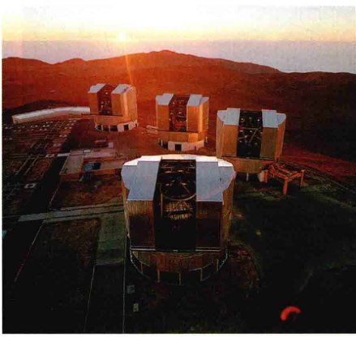欧洲南方天文台的甚大望远镜 (VLT) 位于智利阿塔卡马的帕拉纳尔天文台，是目前世界上最大的光学望远镜。四台8.2m口径的反射式望远镜组合起来，获得了相当于单台16m口径望远镜的有效面积。[欧洲南方天文台 (ESO)]
就总接收面积而言，目前在运行中的最大望远镜是欧洲南方天文台的光学-红外甚大望远镜 (VLT)，位于智利帕拉纳尔山丘，如图4.11所示。VLT由四面独立的8.2m口径的镜面组成，可以组合作为单台设备使用。四个镜面中的最后一块于2001年完成。
分辨能力
大型望远镜的第二个优点是它们出色的角分辨率。一般情况下，分辨率是指任意设备，比如相机或望远镜，产生视场里位置紧密的天体的清晰的、单独图像的能力。分辨率越精细，我们越能更好地区分天体并发现更多的细节。天文学中，我们总是关心角度的测量，“紧密”意味着“在天空中只相隔一个小的角度”，因此角分辨率是决定我们是否能够看到精细结构的因素。图4.12显示了随着望远镜角分辨率的变化，两个天体——即恒星——看起来的模样会如何变化。图4.13展示了提高分辨能力后得到的仙女座星系在不同分辨率下的图像。
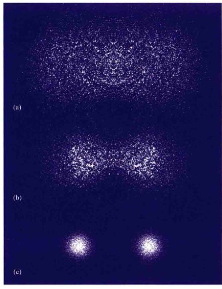用越来越精细的角分辨率观看时，两个一样亮的光源逐渐变得清晰。如图(a)所示，当角分辨率比分离两个天体所需的低得多时，天体看起来是单一的模糊“一团”。从图(b)到图(c)，随着角分辨率的提高，可以辨别出两个源是独立的天体。
是什么因素限制了望远镜的分辨能力？一个重要的因素是衍射，光在拐角处倾向弯曲的趋势——就衍射而言，所有其他类型的波也有这一问题。（探索2-1）因为衍射，当一束平行光进入望远镜时，光线稍稍有些发散，从而使光束无法聚焦到一个点，即使是有完美构造的镜面。衍射给任何光学系统都带来一定的“模糊性”或是分辨率的损失。模糊的程度——可以分辨的最小角间距——决定了望远镜的角分辨率。衍射的大小正比于辐射的波长，与望远镜镜面的直径成反比。对于圆形镜面和其他完美的光学系统，我们可得（以适当的单位）：
其中 1 μm (1微米) = $10^{-6}$ m（见附录2）。
给定望远镜的尺寸，衍射的大小随使用的波长按比例增加，红外或射电波段的观测通常会受到该效应的限制。例如，用1m口径望远镜获得蓝光（波长为400nm）可能的最好角分辨率是0.1"。这个值被称为望远镜的衍射极限分辨率。但如果我们使用该1m口径望远镜在波长为10μm (10,000nm) 的近红外波段进行观测，我们能够获得的最好的角分辨率只有2.5"。工作在1cm波长的1m口径射电望远镜的角分辨率最好只能达到1°。
对于任何给定波长的光，大型望远镜产生的衍射要小于小型望远镜。5m口径望远镜观测蓝光的衍射极限分辨率比刚讨论过的1m口径望远镜要好5倍——大约是0.02"。口径为0.1m (10cm) 的望远镜的衍射极限分辨率将只有1"，等等。相比之下，人眼在可见光范围中段的角分辨率约为0.5'。

从图(a)的10' 到图(b)的1'，从图(c)的5" 到图(d)的1"，随着角分辨率提高约600倍，仙女座星系的细节变得越来越清晰。人眼的分辨率近似于图(b)——如果只用我们的双眼，其灵敏度足以看到这幅图像。[改编自美国大学天文联盟 (AURA)]
4.3 图像和探测器
在前一节中，我们看到望远镜是如何收集和聚焦光线，并得到对应视场图像的。事实上，多数大型天文台使用很多不同的仪器来分析接收自太空的辐射——包括对不同波长的光敏感的探测器、研究发射线和吸收线的光谱仪，以及其他用于专门研究的定制设备。这些装置可能会沿着光路被放置在望远镜外部的不同位置——例如，图4.7(b)中的多个焦点和光路，或是哈勃太空望远镜中更紧凑的探测器排列（图4.8）。在本节里，我们会更仔细地了解望远镜的图像实际是如何得到的，以及一些广泛使用的其他类型的探测器。
图像采集
计算机在观测天文学里有着至关重要的作用。今天，大多数大型望远镜都通过计算机控制，或是由严重依赖计算机协助的操作员控制，图像和数据被记录成计算机程序容易读取和操作的形式。
在大型天文台里，使用照相设备作为主要的数据采集手段变得越来越罕见。相反，被称为电荷耦合器件 (CCD) 的电子探测器被广泛使用，它们直接将结果输出到计算机上。CCD由一块硅晶片构成，晶片被分成许多叫作像素的二维排列的图像元素，如图4.14(a)、(b)所示。当光线打到像素上时，就会在其上累积一个电荷。电荷的多少直接与打到每个像素上的光子数目成正比——换句话说，与那一点上光的强度成正比。电荷的累积被计算机监控着，由此得到二维图像，如图4.14(c)、(d)所示。

电荷耦合器件 (CCD) 由数以百万计的、被称为像素的微小感光单元构成。光照射到像素上会引起像素内电荷的累积。通过电子线路读出每个像素上的电荷，计算机能重现照射在芯片上的光的图案——即图像。(a) CCD阵列细节。(b) 装配好的、将用在望远镜焦点上的CCD芯片。(c) 在这个简单例子里，从芯片读出的典型数据由从0到9的数字排列而成，每个数字代表照射在特定像素上的辐射强度。(d) 当用计算机屏幕的强度标准来表示时，就产生了对应视场的图像。[麻省理工学院林肯实验室 (MIT Lincoln Lab)、美国大学天文联盟 (AURA)]
CCD通常只有几平方厘米的面积，可能包含几百万个像素，一般排列成正方形的网格。随着技术的进步，CCD的面积和它所包含的像素数目在不断增加。顺便说一下，该技术并不局限在天文学中使用，许多家庭摄影机也包含CCD芯片，它们的基本设计与世界知名天文台所使用的设计类似。
相比天文学家使用了一个多世纪的照相底片，CCD有两个重要的优势。首先，CCD比照相底片的效率更高，能记录下多达90%的入射光子；相比之下，照相方法只能记录不超过5%的光子。这种差异意味着，使用相同的望远镜和相同的曝光时间，CCD能显示的天体要比照相底片能显示的天体暗10~20倍。或者说，CCD能在照相技术所需时间的1/10内记录下同样的细节层次，或者使用更小的望远镜记录下同样程度的细节。第二，CCD产生的是图像数字化后的如实反映，可以直接存储在磁带或磁盘中，或者更常见的是，通过计算机网络发送到观测者的所属单位。
图像处理
计算机也广泛用于降低天文图像里的背景噪声。噪声是任何能破坏信息完整性的事物，如调幅广播中的静电干扰或电视屏幕上的“雪花”。噪声破坏望远镜图像是有很多原因的。在某种程度上，它来源于望远镜视场内暗弱的、无法被辨别的光源，以及由地球大气散射到视线方向上的光。它也可能来自于探测器本身的缺陷，这样的缺陷可能产生“嘶嘶”声，类似于当你用音响听一段特别安静的音乐时，可能听到的微弱的背景杂音。
尽管天文学家常常不能确定他们的观测噪声的来源，但至少他们能测量噪声的特点。例如，如果我们观测的那部分天空没有已知的辐射源，那么无论我们接收到什么信号（按定义来说），都是噪声。一旦测量得到信号的属性，借助高速计算机就能部分地消除噪声的影响，使天文学家能够从数据中发掘出可能仍然被隐藏的特征。
利用计算机来处理数据，天文学家也可以弥补已知的仪器缺陷。此外，计算机还可以经常用于进行许多在图像（或光谱）达到最终“干净”前，必须完成的相对简单但却乏味并耗时的杂务。图4.15说明如何用计算机图像处理技术来修正HST已知的仪器问题，这使哈勃望远镜预期的角分辨率在1993年的修理（见4.1节）之前就得以恢复许多。

(a) 从地面上看到的R136星团——大麦哲伦星云（一个近邻星系）里的一群恒星。(b) 哈勃太空望远镜在1990年它的首次修理任务之前拍摄的同一区域的“原始”图像。(c) 同一幅通过计算机处理后，部分补偿了镜面缺陷的图像。(d) 修理后的HST在1994年拍摄的同一区域的图像，这里观测波段更短（蓝）一些。[美国大学天文联盟 (AURA) / 美国国家航空航天局 (NASA)]
测光
当CCD放置在望远镜的焦点上并用于记录仪器的视场图像时，望远镜实际上可以被看作是一台高性能的照相机。然而，天文学家常常要对接收到的来自太空的辐射进行更加具体的测量。
恒星（或其他任何的天体）的一个非常基本的属性是其亮度——每秒钟探测器上接收到的来自于恒星的光能量。亮度的测量被称为测光（字面意思即是“光的测量”）。原则上，确定恒星的亮度只是将CCD上所有对应于该恒星的像素的值累加起来，如图4.14(c)所示。然而，在实践当中，这一过程要更复杂，因为恒星的图像可能是重叠的，通常需要计算机的协助来解决。
天文学家常常结合有色滤光片的使用来进行测光测量，以限制所测量的波长。（除了某些特定的波长范围，滤光片会屏蔽其他所有的辐射；更详细的讨论见6.3节。）有许多标准的滤光片存在，从近红外到可见光，再到近紫外波段，覆盖了光谱中的各种“薄片”。通过将注意力转向这些相对较窄的波段范围，天文学家常常可以估计天体黑体曲线的形状从而能确定天体的温度，至少可以得到近似的温度。（2.4节）滤光片也用在CCD图像中使用，以模拟自然的色彩。例如，本书中大多数HST的可见光图像实际上是由三幅原始图像复合而成，分别由红色、绿色和蓝色滤光片拍摄得到，然后再组合起来重新构成一幅彩色图片。
天体一般是暗弱的，而且大多数天文图像需要长时间的曝光——几分钟到几小时——以便看到精美的细节（4.2节）。因此，我们从图像上测量的亮度事实上是整个曝光的平均值。短期的波动（如果有的话）不会被发现。当需要高精度并快速地测量光的强度时，会使用一种被称为光度计的专业仪器。光度计测量从全部视场或部分视场内接收到的总光强。当只关心一部分视场时，可以简单地通过将视场的剩余部分遮挡（阻挡）来选择该区域。使用光度计通常意味着要“扔掉”空间细节——一般没有图像能生成——但作为回报，可以获得有关辐射源强度随时间变化的更多信息，比如脉动变星或超新星爆发。
光谱
通常天文学家想要研究入射光的光谱，会将大型光谱仪与光学望远镜配合使用。由主镜收集的光可能会重新定向到折轴室，通过狭缝，利用棱镜或衍射光栅色散（分成组成颜色），然后导向探测器上——这一过程在概念上与第3章中所描述的简易分光仪的操作没有太大区别。（3.1节）光谱可以进行实时研究（即在被望远镜接收的同时）或利用CCD（或者照相底片，如今很少用到）记录下来供以后分析。天文学家可以应用第3章中讨论过的分析技术，从它们所记录下的谱线中提取详细信息。（3.5节）
4.4 高分辨率天文学
即使是大型望远镜也有局限性。例如，按照前一节中的讨论，10m口径的凯克望远镜在蓝光波段的角分辨率应该约为0.01"。然而，实践中如果没有更进一步的技术进步，它的角分辨率不可能好于1"。实际上，除了采用特殊技术开发的用于研究一些极亮恒星的仪器外，在1990年前没有地面光学望远镜能分辨出细节好于1"的天体。原因是地球大气中的湍流——沿视线方向上的空气产生的小规模气旋，它在光线到达仪器之前会使恒星的图像变得模糊。
大气干扰
当我们观测恒星时，大气湍流使恒星与望远镜（或人眼）之间空气的光学性质产生持续不断的微小变化。因此，来自恒星的光在传向我们的过程中被轻微地折射，从而使恒星的像在我们的探测器上跳跃（或在我们的视网膜上）。这样连续的偏折是恒星“闪烁”的原因。在夏日隔着炙热的马路观察时，物体似乎在闪烁，这也是同样的原因：到达我们眼睛的不断偏移的光线产生了运动的错觉。
在最佳观测台址的良好夜晚，大气产生的最大偏折略小于1"（考虑拍摄恒星）。几分钟的曝光后（时间足够让其间的大气经历许多小的随机变化），恒星的图像被模糊在视直径大约为1"的近似为圆形的范围内。天文学家使用术语“视宁度”来描述大气湍流的影响。恒星光线（或来自其他任何天体的光）被扩散形成的圆被称为视宁圆面。图4.16说明了一台小望远镜的视宁圆面的形成。
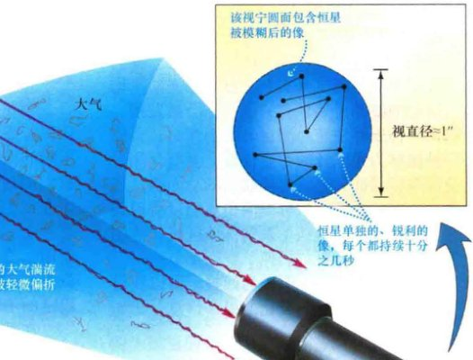由于地球的大气湍流，来自遥远恒星的光线照射在望远镜探测器上稍稍不同的位置上。随着时间的推移，光线在探测器上覆盖了一个近乎圆形的区域，恒星实际的点像被记录成小的圆盘，被称为视宁圆面。放置在绕地球轨道或月球上的光学望远镜显然可以克服大气对地面设备所造成的限制。没有大气干扰，可以获得极其高的分辨率——接近于衍射极限分辨率，只受制于在太空中建造和放置大型结构的工程学限制。哈勃太空望远镜2.4m镜面的衍射极限分辨率只有0.05"（对蓝光来说），提供给天文学家的宇宙图像要比更大的地面设备通常可以提供的图像清楚20倍。
大气湍流对波长较长的光影响不大——地面上的天文学家在红外波段的“观测”更好。然而，大气对多数红外波段完全或部分不透明的事实抵消了这种图像质量的提高。（2.3节）由于这些原因，为了获得可能的最好的观测条件，望远镜被放置在世界各地的山顶上（以尽可能地位于大气层上部），那里大气相当稳定而且相对不受灰尘与湿气的影响。另一个选择偏远地区的原因是人口密集地区日益严重的光污染问题——来自街道、停车场、家庭以及企业的讨厌的直直向上的灯光，它们被空气中的尘埃散射后进入望远镜，甚至淹没了天文学家想要观测的来自于遥远恒星和星系的暗弱信号。
在美国本土，这些台址往往位于西南部的沙漠中。北半球的美国国立光学天文台建成于1973年，高高坐落在亚利桑那州图森市附近的基特峰上。这一台址被选中，是因为它有许多干燥、晴朗的夜晚。视宁度小于1"的台址被认为是好台址，视宁度为几个角秒的台址对许多观测来说也是可以容忍的。夏威夷莫纳克亚山（图4.10）和智利安第斯山脉上的很多台址（图4.11和图4.17）的观测条件甚至更好，这正是为什么近来许多大型望远镜建造在这些大气特别清澈的地方的原因。
主动光学
当前生成超锐利图像的技术所遵循的理念包括进一步的计算机控制和几个阶段的图像处理（见4.2节）。在望远镜收集光线的同时，通过分析其生成的图像、可以时时刻刻地调整望远镜，以避免或补偿由于镜面变形、圆顶内温度变化、甚至是大气湍流所造成的影响。
即使在完美的视宁度条件下，大多数望远镜也不会具有衍射极限的分辨率。在图像曝光所需的几十分钟甚至几小时内，镜面或圆顶内的温度可能会有轻微的波动。当望远镜跟踪横穿过天空的天体时，镜面精确的形状可能会有轻微的变形。这些改变产生的影响使主镜面的焦点可能会随时改变，让最终的图像模糊掉，像大气湍流产生视宁圆面那样（图4.16）。在最好的观测台址，视宁度通常很好，这些微小的影响可能才是使图像模糊的主要因素。旨在控制这种环境和机械波动的集光技术被称为主动光学。
第一台结合主动光学设计出来的望远镜是新技术望远镜 (NTT)，于1989年在智利的欧洲南方天文台建成，并在1997年进行了改进。（图4.17所示的即是最著名的望远镜——NTT。）这台3.5m口径的望远镜，采用望远镜控制的最新技术，随着主镜温度和方向的改变，通过每分钟调整主镜的倾斜度来始终保持可能的最合适的焦点，可以取得好至0.2"的角分辨率。图4.18说明了主动光学如何显著地提高了图像的分辨率。主动光学技术现在包括改善圆顶的设计以控制气流，精确地控制镜面温度，以及利用镜面后的活塞来保持镜面的精确形状。之前介绍过的所有大型望远镜都包括主动光学系统，可使它们的角分辨率提高到零点几角秒。

位于智利安第斯山脉拉西亚的欧洲南方天文台由欧洲各国联合运营。天文台有许多大小不同的光学望远镜圆顶，每个都有不同的支持设备，使它成为赤道以南最万能的天文台。拉西亚天文台最大的望远镜——图中中心偏右的方形建筑——是新技术望远镜，一个3.5m口径的主动光学望远镜。[欧洲南方天文台 (ESO)]
星团R136部分区域的伪彩色照片——显示和图4.15中相同的天体——比较了(a)没有使用和(b)使用主动光学系统后的分辨能力。两幅图像都是用图4.17中所示的新技术望远镜拍摄的。[欧洲南方天文台 (ESO)]
实时控制
随着主动光学系统的出现，地球大气再次成为限制望远镜分辨率的主要因素。值得注意的是，通过采用一种叫作自适应光学的方法，这个难题现在已经被解决了。这一技术是在图像曝光的同时，在计算机控制之下实际改变镜面的形状，以消除大气湍流的影响。这里谈论的镜面一般不是指望远镜的大型主镜。相反，由于经济和技术上的原因，一个其多小的镜面（通常直径为20~50cm）会被插入到光路之中，并被操纵以达到预期的效果。
自适应光学遇到了难以预计的理论和实践性难题，但回报也非常大，从20世纪70年代开始，它就是受到追捧的研究课题。在20世纪90年代，从战略防御计划中解密的军事技术使研究努力得到了巨大的推进，那是“里根时代”的导弹防御计划（被批评者称为“星球大战”），旨在瞄准和击落来袭的弹道导弹。在图4.19所示的系统中，一束激光探测望远镜上空的大气，生成一颗“人造恒星”，以使天文学家能够测量大气状况并将这一信息传给计算机，每秒钟内数千次地调整望远镜的镜面以弥补欠佳的视宁度。

在这幅白天的照片中，位于加利福尼亚利克天文台的3m沙因望远镜正在进行测试。一束激光用来创建“人造恒星”（光从大气中反射回望远镜）以改进导星。激光束探测望远镜上方的大气，允许镜面形状发生每秒数千次微小的由计算机控制的改变。[利克天文台 (Lick Observatory)]
自适应改正在红外波段的应用要比光学波段更容易些，因为大气产生的扭曲要小些（恒星在红外波段更少“闪烁”），并且红外更长的波长对镜面精确形状的严格要求宽松得多。红外自适应光学系统已经存在于许多大型望远镜里。例如，双子座和昴星团望远镜报告的自适应光学角分辨率在近红外波段约为0.06"——虽然不太接近衍射极限（按照之前给出的公式，8m口径望远镜在1μm波长处的衍射极限是0.03"），但已经比哈勃太空望远镜在相同波长处的角分辨率好，如图4.20(a)所示。凯克望远镜和甚大望远镜都加入了自适应光学仪器，具有在近红外波段产生衍射极限图像的能力。

(a) 在这幅由位于夏威夷的8m口径的双子座北望远镜拍摄的未改正的可见光图像（左）中，星团NGC6934的角分辨率略小于1"。应用自适应光学后（右），红外波段的分辨率提高了近10倍，使更多的恒星被看得更加清楚。(b) 双星北河二的可见光图像是由位于夏威夷毛伊岛的哈雷阿卡拉山上的军事天文台获得的。未改正前的图像（左）在几角秒内是模糊的，只能显示出一点点双星的性质。应用自适应光学后（右），角分辨率提高到0.1"，两颗恒星明显分开。[美国国家光学天文台 (NOAO); 麻省理工学院林肯实验室 (MIT Lincoln Laboratory)]
可见光自适应光学已经通过了实验验证，一些天文望远镜开始整合这种技术。图4.20(b)比较了两幅被称为“北河二”的邻近双星的可见光观测。观测是由相对适中的1.5m口径望远镜得到的。自适应光学系统清晰地分辨出了两颗恒星。值得注意的是，自适应光学技术给予了天文学家“两全其美”的礼物，利用大型地面光学望远镜实现了只有在太空中才能获得的分辨能力。
4.5 射电天文学
在晴朗的日子里，除了可见光辐射能穿透地球大气外，射电辐射也能抵达地面。事实上，如图2.8所示，电磁波谱中的射电窗口比光学窗口要宽得多。（2.3节）由于大气对长波辐射没有阻碍，射电天文学家已经建成了许多地基射电望远镜，能够探测从太空而来的射电波。这些望远镜都是20世纪50年代后建成的——射电天文学相比光学天文，是年轻得多的学科。
早期观测
射电天文学领域起源于1931年卡尔·央斯基在贝尔实验室的工作。央斯基当时正在研究短波无线电干扰的原因，他发现微弱的静态“嘶嘶”声没有明显的地内（地球上的）来源。他注意到，“嘶嘶”声的强度随时间变化，峰值的出现每天提前约4min。他很快意识到峰值的出现正好间隔一恒星日，从而他得出结论，“嘶嘶”声确实不是来源于地球，而是来自于空间中的特定方向。（1.4节）该方向现在知道对应于我们银河系的中心。
一些天文学家被央斯基的发现迷住了，但由于当时的技术限制——同时，更是由于经济萧条时期的预算限制——他们的进展较缓慢。央斯基自己也转向贝尔实验室另外的项目，再也没有回到天文研究上。然而，到了1940年，射电空间的首次系统性巡天开始进行。在第二次世界大战期间实现了一系列技术突破之后，这类研究迅速发展成为天文学的一个独特分支。
20世纪30年代，天文学家开始意识到我们银河系内恒星之间的空间并不是空的，而是充满了极度弥散（低密度）的气体（见第9章）。在20世纪50年代，人们逐渐认识到，这些银河系中完全不可见的部分可以在射电波段被详细观测和绘制，这确立了央斯基开创性工作真正的重要地位。如今，他被认为是射电天文学之父。
射电望远镜的精髓
图4.21(a)展示了世界上最大的可操纵射电望远镜：位于西弗吉尼亚州美国国家射电天文台的直径为105m (340ft) 的大型望远镜。虽然比反射式光学望远镜要大得多，但大多数射电望远镜的建造方式基本一样。它们有着一个巨大的、呈马蹄形状的底座，支撑着一面作为接收区域的巨大金属曲面天线。如图4.21(b)所示，天线捕获入射的射电波并把它们反射到焦点上，在焦点上，接收器探测信号并将它们传输到计算机中进行存储和分析。
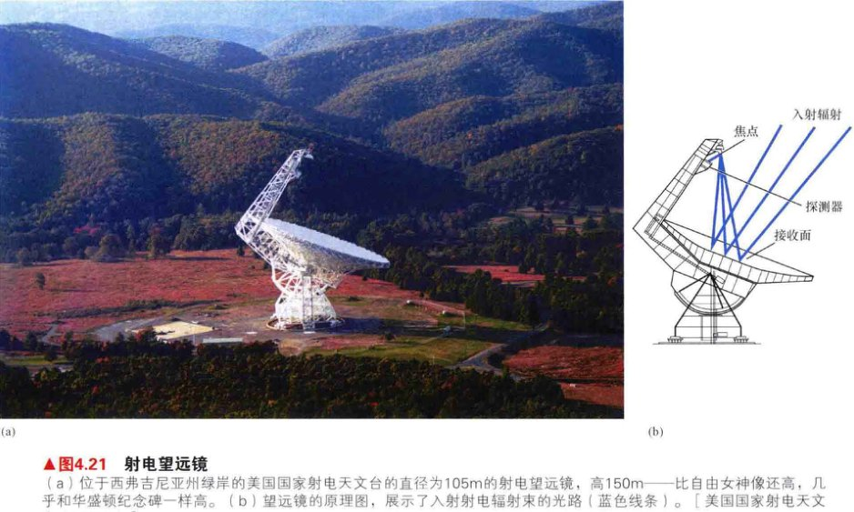(a) 位于西弗吉尼亚州绿岸的美国国家射电天文台的直径为105m的射电望远镜，高150m——比自由女神像还高，几乎和华盛顿纪念碑一样高。(b) 望远镜的原理图，展示了入射射电辐射束的光路（蓝色线条）。[美国国家射电天文台 (NRAO)]
从概念上讲，操作射电望远镜类似于操作把探测仪器放置在主焦点[见图4.6(a)]上的光学反射式望远镜。然而，不像光学仪器能够同时探测所有的可见光波长，射电探测器在任何时候通常都只能记录一段窄窄的波长范围。为了观测不同频率的辐射，我们必须重新调整设备，这很像我们将收音机或电视机调整到另一个频道。
射电望远镜必须要建得很大，部分原因是因为宇宙射电源极其微弱。事实上，整个地球表面接收到的射电辐射总能量不到1W的万亿分之一。相比之下，我们地球表面接收到的红外形式的辐射和夜空中可见的任意一颗亮星的可见光辐射，能量约为1000W。为了收集足够的射电能量来进行细致的测量，巨大的接收面积是必不可少的。图4.22显示了一面更大但不能移动的射电望远镜，固定在波多黎各的阿雷西博山丘之中。阿雷西博望远镜的直径约300m (1000ft)，1963年在山坡间的自然洼地中建成，它的反射面跨越了近20acre (1acre约为4046.9m2) 的面积。
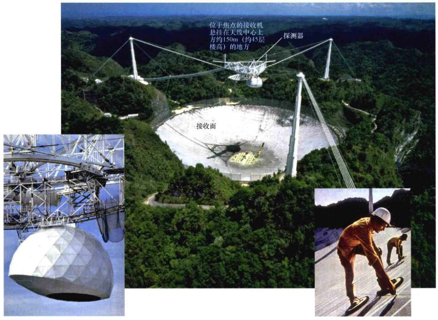300m直径射电望远镜的航空照片，望远镜天线位于波多黎各阿雷西博附近的美国国家天文和电离层中心。左边插图显示了高高悬挂在天线上方的射电接收机的近照。右边插图展示了技术人员正在调整天线表面，以使之更加平滑。[D. 帕克 (D.Parker) / T. 阿塞维多美国国家天文和电离层中心、康奈尔大学 (Cornell)]
由于衍射的影响，相比它们的光学对应体，射电望远镜的角分辨率通常非常差。射电波的典型波长比可见光的波长长约一百万倍，并且这些长波对应的角分辨率也很粗糙。（回忆4.2节，波长越长，衍射越大。）即使是相当巨大的射电天线，也只能部分抵消这种影响。当接收的射电波波长约为3cm时，图4.21所示的射电望远镜能达到的分辨率约为1'。然而，它设计的最有效（即最敏感的射电信号）的工作波长接近1cm，这时的角分辨率近似为20"。单个射电望远镜所能获得的最好的角分辨率约为10"（对那些工作在毫米波段的最大设备来说）——比某些大型光学系统的能力至少粗糙100倍。
射电望远镜比光学望远镜建造得大得多的原因在于它们的反射表面不需要像短波辐射所需的那样平滑。只要表面的不均匀性（凹陷、凸起等）比要探测的波长小得多，那么表面反射就不会发生扭曲。由于可见光辐射的波长短（短于$10^{-6}$m），所以需要极其光滑的表面才能正确地反射光波，并且很难建造非常大的镜面来满足这种严格的容差。然而，即使是粗糙的金属表面也能精确地聚焦波长为1cm的波，而波长为1m或更长的射电波通过不规则度大如拳头一样的表面也能完美地反射和聚焦。阿雷西博望远镜最初的表面使用铁丝网，重量轻且便宜。尽管相当粗糙，但铁丝网仍足以产生正确的反射，因为铁丝之间的空隙比要探测的射电波长要小得多。
整个阿雷西博望远镜的天线在1974年用金属薄板重新铺设，并在1997年进一步升级，现在它可以用于研究短波长的射电辐射。自从1997年升级后，天线面板可以调整，以保持精确的球面形状，整个表面的精度约为3mm。在5GHz的频率处（对应波长为6cm——鉴于天线的表面属性，这是可以研究的最短波长），望远镜的角分辨率约为1'。
然而，巨大尺寸的天线有着一个明显的劣势：在天空中跟踪天体时，阿雷西博望远镜的指向性不是很好。探测器在焦点两边能移动大约10°，造成望远镜只能观测那些随地球自转、刚好在望远镜上方约20°范围内经过的天体。
阿雷西博望远镜是能探测长波射电辐射的、具有粗糙表面的望远镜实例。在另一个极端中，图4.23展示了位于马萨诸塞州东北部的36m口径的海斯塔克望远镜。它的天线由抛光后的铝建造而成，天线表面保持为抛物面，其固体表面上任何方向的精度均约为1mm。它可以反射和精确聚焦波长短至几毫米的射电辐射。该望远镜处在一个保护壳或者说天线罩内，以保护其表面不受新英格兰严酷天气的影响。除了没有缝隙以供望远镜“观看”外，天线罩的作用很像保护光学望远镜的圆顶。入射的宇宙射电信号几乎能畅通无阻地通过天线罩的玻璃纤维结构。

海斯塔克望远镜的天线在其保护天线罩内的照片。为比较大小，注意站在底部的工程师。还要注意望远镜表面的暗淡光泽，表明了它结构光滑。海斯塔克望远镜的天线虽然有很差的光学镜面，但却是台出色的射电望远镜。它可以用来反射和精确聚焦短波长的射电辐射，甚至是波长小至毫米的辐射。[麻省理工学院 (MIT)]
射电天文学的价值所在
尽管有角分辨率相对较差的固有缺点，但射电天文也有许多优点：射电望远镜可以一天24小时观测；接收射电信号不需要黑暗的环境，因为太阳是相当弱的射电能量源，它的辐射不会淹没掉从天空中其他地方传到地球的射电信号。另外，射电观测一般可以透过多云的天空进行，即使在雨天或暴雪天气下，射电望远镜也可以探测最长波长的射电波。恶劣天气带来的影响几乎没有，因为大多数射电波的波长比大气中的雨滴或雪花的典型尺寸要大得多。光学天文观测在这样的条件下不能进行，因为可见光的波长要小于雨滴、雪花，甚至是云中微小的水滴。
然而，或许射电天文学最有价值（实际是对所有关心电磁波谱不可见范围的天文学家）的贡献是它开辟了宇宙的一个全新窗口。这主要有三个原因。首先，就像在可见光波段明亮的天体（比如太阳）不一定是强的射电源那样，宇宙中许多最强的射电源只发出很少的可见光或者根本不发射。第二，可见光可能会被辐射源视线方向上的星际尘埃强烈吸收，而射电波一般不会受到其间物质的影响。第三，正如前面提到的那样，宇宙中的许多地方通过光学手段根本是不可见的，但在长波处却容易被探测到。银河系中心是最好的例子，这是完全不可见的区域——我们对银河系中心的了解几乎是完全基于射电和红外观测。因此，这些观测不仅能为我们提供在不同波段研究同一天体的机会，还能让我们发现可能是完全不可见的全新类型的天体。

猎户座星云是距离地球约1500光年的恒星形成区。（该星云位于猎户座，图1.8中可见为一个小的斑点。）这张照片中的明亮区域是恒星和发光气体云。黑暗区域并不是空的，但它们的可见光辐射被星际物质所遮盖。同一区域的可见光图像叠加在射电等值线图上（蓝色线条）。等值线图中的每条曲线均表示射电辐射的不同强度。注意，一些地方的射电等值线包围了可见光的黑暗区域，使我们能“看穿”遮挡光线的物质。光学图像的角分辨率约为1"，射电图的角分辨率为1'。[背景照片：美国大学天文联盟 (AURA)]
图4.24显示了猎户座星云（一个巨大的星际气体云）的一幅光学照片，由基特峰上4m口径的望远镜拍摄。将光学图像叠加在同一区域的射电图上，射电图由海斯塔克射电望远镜（图4.23）来回扫描星云并多次测量射电辐射强度后得到。射电图被绘制成一系列的等值线，连接射电亮度相等的地方，类似于气象学家在天气图上画出的等气压图或地图制图师在地形图上绘制的等高图。内部的等值线代表强一些的射电信号，而外部的等值线则代表较弱的射电信号。应注意为什么射电图的细节比它的光学对应图差，因为相比可见光，接收到的射电辐射的波长更长。
图4.24所示的射电图与星云的可见光图像有许多相似之处。例如，光学图像中心附近的射电辐射最强，并朝星云的边缘减小。但射电和光学图像之间也有细微的差别，二者主要在星云主体的左上部不同，那里的可见光好像消失了，尽管存在射电波。为何在没有任何可见光线发出的位置上探测到了射电波？答案是，这个独特星云区域的左上象限内充满了尘埃。尘埃遮挡了短波长的可见光，却没有遮挡长波长的射电辐射。因此，我们遇到了天文学中有舍有得的典型例子：尽管长波长的射电信号提供的是该区域的低分辨率图，但同样的射电信号可以相对不受阻碍地穿过尘埃密布的区域。在这种情况下，我们才能看到猎户座星云的真实大小。
4.6 干涉测量
相比光学天文，射电天文学的主要缺点是它相对较差的角分辨率。然而，在某些情况下，射电天文学家可以使用被称为干涉测量的技术来克服这种限制。这种方法使获取更高角分辨率的射电图像成为可能，甚至好于用最好的、地面上的或空间中的光学望远镜所能达到的角分辨率。
在干涉测量中，两个或两个以上的射电望远镜协力用于在同一波长和同一时间观测同一天体。望远镜联合起来组成了一个干涉仪。图4.25展示了一个大型的干涉仪——许多单独的射电望远镜组合为一个整体进行工作，通过电缆或无线连接。阵列中组成干涉仪的每个天线接收到的信号都被发送至中央计算机，然后合并并存储下来。
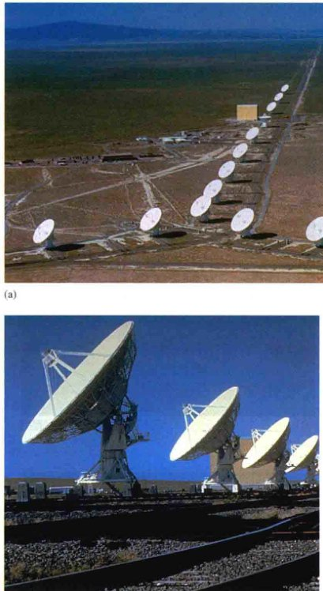(a) 该大型干涉仪位于新墨西哥州的圣奥古斯汀平原，由27个独立的天线构成，沿Y形分布约30km长。它是世界上最灵敏的射电设备，被称为甚大阵，简称为VLA。(b) 地面上的近景，显示了一些VLA的天线是如何被安装在铁轨上面的，这样可以很容易地重新定位它们。[美国国家射电天文台 (NRAO)]
通过分析当信号组合在一起时会如何相互干涉，可以进行干涉测量。（探索2-1）设想一束入射波照射到两个探测器A和B上（图4.26），由于探测器处在距离光源不同的地方，那么一般来说，它们记录到的信号相位会不一致。在这种情况下，当信号结合时，它们会干涉相消，部分相互抵消。只有当探测到的射电波碰巧相位正好一致时，信号才会有益地结合起来，并产生强烈的信号。注意，干涉的大小取决于波的传播方向与探测器之间连线的相对关系。所以——至少在原则上——细致地分析组合信号的强度可以精确测量源在天空中的位置。

天线A和B上的两个探测器，由于辐射需要时间才能传过它们之间的距离，因此它们记录的是同一入射波的不同信号。当信号合二为一时，干涉的程度取决于波的运动方向，这提供了一种测量源在天空中位置的手段。这里，深蓝色的波来自于高悬在空中的源，当天线A和B接收到它时发生相消干涉。而由于地球的自转，同一个源（淡蓝色波）的位置发生移动，干涉可以是相长干涉。
随着地球的自转和天线对目标的跟踪，干涉仪相对于源的方向发生改变，显现出波峰和波谷的图案。实践中，从数据中获取位置信息是一项复杂的任务，通常会涉及多个天线和几个源。直截了当地说，经过深度的计算机处理后，干涉图案被转化为目标天体的高分辨率图像。本质上，干涉仪是单一巨大天线的替代者。就分辨能力而言，干涉仪的有效口径是它最外部的两个天线之间的距离。换句话说，两个小型天线可以作为一个虚构但巨大的单一射电望远镜的直径两端，这样便能显著地提高角分辨率。例如，不管是使用单面5km口径的射电望远镜，还是使用两个小得多的、分隔5km远、但用电缆连接起来的天线，对于典型的射电波长（比如10cm），都可以达到几个角秒的角分辨率。望远镜分隔开的距离越大——即干涉仪的基线越长——能够达到的分辨率就越高。
图4.25所示的大型干涉仪如今常常能获得与光学图像一样的射电角分辨率。图4.27展示了一幅用干涉法测量的约6200万光年远的一对碰撞星系的射电图，以及用大型光学望远镜所拍摄的这些星系的照片。此射电图的清晰度比图4.24中的等值线图要好得多——实际上，图(a)的射电分辨率与图(b)中的光学图像的分辨率相当。注意图(b)中的光学图像是真彩色，但图(a)中的射电图是用伪彩色表示的，伪彩色是常用于显示非可见光数据的技术。射电“颜色”不是代表辐射的实际波长，而是代表源的其他一些属性，这里代表的是射电强度，从红色到黄色增加。阅读探索4-1，了解有关最新的强大干涉仪的内容，眼下它正在高高的智利安第斯山脉上被建造。

(a) 碰撞中的天线星系的ALMA射电“图像”（或射电图），用几个角秒的角分辨率在射电波段观测得到。(b) 同一个星系的可见光图像，由哈勃望远镜拍摄，显示比例与图(a)相同。[欧洲南方天文台 (ESO) / 日本国立天文台 (NAOJ) / 美国国家射电天文台 (NRAO)、空间望远镜科学研究所 (STScI)]
天文学家已经建造了横跨很远的射电干涉仪，先是横跨北美洲，然后是横跨两个大洲。一个典型的甚长基线干涉测量（通常被简写成VLBI）尝试可能会使用北美洲、欧洲、澳大利亚和俄罗斯的射电望远镜，可以实现近似于0.001"的角分辨率。这样似乎不会受到地球直径的限制：射电天文学家已经成功使用了太空轨道中的天线，连同地面上的几面天线，构造了更长的基线，并实现了更高的分辨率。已有提案将干涉仪完全放置在地球轨道上，甚至是放在月球上。
其他波长的干涉测量
虽然干涉测量技术最初是由射电天文学家开发的，但它已不再被局限在射电领域内。当电子设备和计算机的速度足以合并和分析来自分立射电探测器的射电信号而不损失数据时，射电干涉测量变得可行。随着技术的进步，将同样的方法应用于更高频率的辐射已成为可能。毫米波干涉测量已经被确立为重要的观测手段，凯克望远镜和VLT都用其进行常规的近红外干涉测量。
也许，目前在运行中的分辨率最高的干涉测量仪器是位于加利福尼亚威尔逊山的由高角分辨率天文中心 (CHARA) 操作的六台光学望远镜阵（如图4.28所示）。虽然每个望远镜的直径只有1m，但望远镜阵在山顶的布置将光束合并后得到的分辨率，相当于单面口径为300m的望远镜。CHARA不是设计用于得到所研究恒星的图像，但是，它能解析小如0.0002"的细节，能够高精度地测量一些恒星的位置、轨道，甚至半径。
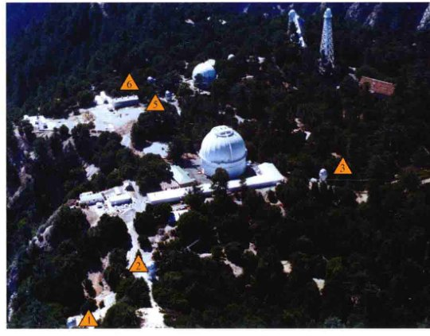这幅航空照片展示了位于加利福尼亚州著名的威尔逊山天文台的高角分辨率天文望远镜阵列的成员，与天文台的现有仪器交织在一起。阵列里的小型1m口径望远镜用编号标出。[E. 西米森 (E.Simison) / 海西公司 (Sea West Enterprise)]
探索4-1：ALMA阵
在高耸的南美洲山脉之巅，一个崭新、功能强大的望远镜已经由来自美国、加拿大、欧洲、东亚和智利的天文学家及工程师组成的国际联合体建成。阿塔卡马大型毫米波阵 (ALMA) 是当今地球上最大的天文项目，位于智利北部海拔约5000m的查南托高原。那里位于阿塔卡玛沙漠中，望远镜从地球上最干燥的地方之一扫描宇宙，没有云、无线电干扰或是光污染。天文学家期望用与光学望远镜一样的清晰度和分辨率来感知射电宇宙的梦想成真。
ALMA是具有革命性设计的望远镜——实际由66个射电天线组成的阵列将如同一台单独的望远镜那样同步运行。每个高精度的天线探测波长在0.3~10mm之间的辐射——即所谓的毫米波段，介于电磁波谱中传统的射电波段和红外波段之间。至今，天文学家一直无法在这一偏僻的光谱范围内探索宇宙，迄今为止也只能瞥见新科学领域的到来。任何时刻，天线都指向同一个宇宙天体，但天线用高分辨率观测天体时的角度也稍有不同。而且，天线是可移动的，能在沙床上来回移动使得研究者能有效地“缩放”观测目标。下面的照片展示了2011年首次部署的部分天线。

ALMA在2012年开始得到最初的图像，让天文学家感受到了天线阵列的潜力；随着天线的精心调整和更多天线加入阵列，天文学家期望更高质量的图像。右侧的图片展示了另一幅图——一个年轻恒星系统周围的尘埃细环。图中位于环中心的明亮辐射源是北落师门——一颗约25光年远的恒星，在它的尘埃环里，认为可能正有行星形成。这里展示的尘埃环或尘埃盘由两部分组成：底部蓝白色的辐射是由哈勃太空望远镜在光学波段观测得到的，顶部细长的黄色（伪彩色）环是ALMA观测的。用哈勃太空望远镜观测的天文学家曾认为，他们在尘埃中发现了一颗巨大的、木星尺寸的行星，但新的、高分辨率的ALMA图像显示并没有这样的一颗行星。如果那里存在行星，它们一定会小得多，可能比地球还小。搜寻地球大小的行星正火热升温，ALMA处在这一伟大尝试的最前沿。

ALMA预计将是下一代天文学家所倚重的望远镜。随着越来越多天线的加入，也许最终总共会有好几百个，这个有史以来最强大的望远镜预期将广泛探索天文学的所有前沿。一个了解宇宙的全新窗口正在被开启，捕捉前所未有的细节，从最早的恒星和星系，再到大多数星系中心的谜一般的黑洞，甚至可能直接将太阳系之外行星的形成成像。
4.7 空间天文学
光学和射电天文学是天文学中最古老的分支，从20世纪70年代起，观测技术发生了实质性的变革，覆盖了电磁波谱的剩余范围。如今，光谱的所有部分都已被研究，从射电波段直到伽马射线，以期最大化地提高天体的可用信息量。
正如前面曾提到的，可观测的天体类型随波长的变化会有明显的变化。全波段的覆盖是必不可少的，不仅能使观测更清晰，甚至还能看到事物的根本。由于地球大气的光传播特性，天文学家必须要在太空中实际研究电磁波谱的所有范围，从伽马射线到X射线再到可见光、直到红外和射电波段。“另类天文学”的兴起与空间项目的发展息息相关。
红外天文学
红外研究是现代观测天文学的一个重要组成部分。红外天文学涉及的宇宙现象范围很广，从行星和它们的母星到新恒星形成的浩瀚星际空间，再到遥远星系中发生的爆发性事件。一般来说，红外望远镜与光学望远镜类似，但它们的探测器对长波辐射敏感。事实上，正如我们所见，尽管红外辐射强度在大气层里会有所减少，但许多地面“光学”望远镜也能用于红外研究，一些最有帮助的红外观测都是在地面上完成的（比如从莫纳克亚山上，如图4.10所示）。
与射电观测一样，长波的红外辐射常常能让我们探知在光学图像中隐藏起来的天体。作为一个红外辐射穿透性的地面实例，图4.29(a)展示了加利福尼亚州的一个尘土飞扬、雾霾漫天的区域，在可见光下几乎不可见，但在红外波段下却容易看到，如图4.29(b)所示。图4.29(c)和(d)给出了天体的类似比较——猎户座星云的尘埃区域，可见光在那里被星际云所遮挡，但在红外波段却清晰可辨。

拍摄于加利福尼亚圣何塞附近的光学照片(a)，在同一时间也拍摄了同一区域的红外照片(b)。长波的红外辐射比短波的可见光更好地穿过烟雾。同样的优点也适用于天文观测。猎户座星云中心区域内一个特殊的尘埃密布区域的光学图像(c)更清晰地被红外图像(d)揭示出来，显示出被尘埃遮蔽的一群恒星。[利克天文台 (Lick Observatory)、美国国家航空航天局 (NASA)]
如果天文学家利用气球、飞机、火箭和卫星搭载望远镜，将仪器放置到地球大气上部或之外，那他们就能得到更好的红外观测。和预期的一样，空间红外望远镜通常比地面天文台里的大设备要小。2003年，NASA发射了0.85m口径的斯必泽空间望远镜 (SST)，简称斯必泽望远镜，以纪念莱曼·小斯必泽，他是著名的天文学家，第一个提出 (1946年) 在太空中放置大型望远镜。斯必泽空间望远镜的探测器设计的工作波长为3.6~160μm，在该波长范围内的角分辨率为2.5"~40"。不同于以往的空间天文台，SST不绕地球运行，而是跟随地球绕太阳运行，在地球后面的数百万公里处尾随地球，以把地球对探测器的热效应减低到最小。
如今，它正以每年0.1AU的速度渐渐远离地球。图4.30展示了斯必泽望远镜近期拍摄的一些壮观景象（伪彩色图）。

斯必泽空间望远镜拍摄了这些图片，清楚地展示了它的照相机的性能，望远镜现在正绕着太阳运动。(a) 这个未命名的恒星形成区显示出众多恒星（蓝白色）之间的大量尘埃（红橙色）。(b) 更大的旋涡星系M100内的尘埃也将热量辐射出来。[喷气推进实验室 (JPL)]
斯必泽望远镜的探测器被冷却至绝对零度附近，以观测来自太空的红外信号而不会受到望远镜自身热量的干扰。不幸的是，用于制冷的液氦不能无限期地贮存，它会缓慢地（不出所料地话）泄漏到太空中。2009年，随着温度升高到30K左右，SST进入到了一个新的“温暖”运行阶段——即便以地球标准来说，这个温度仍然非常寒冷，但已足够温暖，望远镜自身的热辐射将淹没掉载荷的长波探测器。（回忆维恩定律，温度为30K的物体热辐射峰值波长大约为100μm。）不过，波长稍短的探测器 (3.6μm和4.5μm) 应该至少能运行到2014年，斯必泽望远镜仍然是这段时间内的重要天文发现手段。
最新的——也是最大的——空间红外望远镜是欧洲的3.5m赫歇尔空间天文台 (Herschel Space Observatory)，它以英国天文学家威廉·赫歇尔爵士命名，他首先证明了（在1800年）红外辐射的存在。赫歇尔空间天文台于2009年发射，设计运行于光谱的远红外波段，波长为50~700μm。望远镜位于地球轨道的L2拉格朗日点，这是远离地球约150万千米的稳定位置，位于太阳——地球连线的外边。图4.31(a)是赫歇尔空间天文台观测的一个叫作鹰状星云的邻近恒星形成区。这幅伪彩色图将三个不同红外波长 (70μm、160μm和250μm) 的数据结合在一起，分别用蓝色、绿色和红色表示。图4.31(b)展示了同一区域的可见光图像。注意，红外图像显示了巨大的热尘埃和气体组成的云，它们是恒星形成过程中的关键组件，在可见光波段完全不可见。发射赫歇尔空间天文台时，预计它会在2013年年底停止运行，因它的冷却剂将耗尽。

(a) 这幅鹰状星云的红外图像是由赫歇尔空间天文台获得的。在这幅伪彩色图中，不同的色彩代表了尘埃的温度，从蓝色到红色温度降低。(b) 同一星云的可见光图像清楚地显示了该区域内到底有多少被其所含的尘埃所遮蔽。[欧洲航天局 (ESA)、欧洲南方天文台 (ESO)]
目前在哈勃太空望远镜（见4.1节）上装载的仪器还有一个高角分辨率 (0.1") 的近红外相机和光谱仪。NASA计划在2018年发射哈勃望远镜的继任者——詹姆斯·韦伯太空望远镜 (James Webb Space Telescope, JWST)，有着6.5m口径的拼合镜面和优化后用于近红外和中红外波长的探测器，詹姆斯·韦伯太空望远镜有望成为红外天文学的超级仪器。
紫外天文学
比可见光波长更短的一边是紫外区域。波长从400nm（蓝光）延伸到几纳米（“软”X射线），这部分光谱范围的探索最近才开始。由于地球大气对400nm以下的辐射是部分透明的，并且对300nm以下的辐射是完全不透明的（在一定程度上是因为臭氧层），因此天文学家无法在地面进行任何有用的紫外观测，即使是在最高的山顶观测。因此，火箭、气球或者卫星对紫外望远镜——一种设计用于捕获和分析高频辐射的设备——来说都是必要的。
最成功的紫外空间项目之一是国际紫外探测器 (IUE)，它于1978年被放置在环地球轨道上，1996年年底由于预算因素而停止运行。和所有紫外望远镜一样，IUE的基本外观和结构与光学和红外望远镜非常接近。来自世界各地的几百名天文学家使用IUE的近紫外光谱仪探测了行星、恒星和星系里各种各样的现象。在随后的章节中，我们将了解这个相对较新的宇宙窗口为我们呈现的活力，以及似乎弥漫宇宙的剧烈活动。
图4.32展示了由最近的两颗紫外卫星所拍摄的图像。图4.32(a)显示的是一个超新星遗迹的图像——大约12,000年前发生的剧烈恒星爆炸的残留物——由1992年发射的极紫外探测器 (EUVE) 卫星拍摄得到。自发射以来，EUVE已经绘制了我们近邻宇宙的远紫外图像，并且彻底地改变了天文学家对太阳系邻近恒星际空间的看法。图4.32(b)显示了两个相当接近的星系——M81和M82，由2003年发射的星系演化探测器 (GALEX) 卫星所拍摄。HST，最著名的光学望远镜，也是一个出色的紫外成像和光谱仪。

(a) 极紫外探测器卫星上的相机拍摄了这幅天鹅座环状超新星遗迹的图像，这是由大质量恒星几乎爆炸成碎片后产生的。爆炸释放的能量非常巨大，余晖已经闪亮了几个世纪。图中展示的望远镜圆形视场里发亮的碎片距离地球约1500光年远。(b) 这幅旋涡星系M81和它的伴星系M82的伪彩色图像是由星系演化探测卫星拍摄的，远离星系中心的蓝色旋臂显露出恒星的形成。[美国国家航空航天局 (NASA)、星系演化探测器 (GALEX)]
高能天文学
高能天文学在X射线和伽马射线波段研究宇宙——这类辐射产生的光子频率最高，因此能量也最大。我们如何探测如此短的波长的辐射呢？首先，必须在地球大气之外获得这些光子，因为它们都不会到达地面。其次，探测它们需要用到设计完全不同的仪器，与捕获到目前为止讨论过的相对能量较低的辐射不同。
高能望远镜的设计差异是因为X射线和伽马射线不能在任何类型的表面发生反射。相反，这些射线往往会直接穿过，或者是被它们所接触的任何材料所吸收。然而，当X射线几乎是擦过某个表面时，会在某种程度上发生反射并成像，但镜面的设计相当复杂。正如图4.33所示，为了保证所有入射的射线都能掠射发生反射，望远镜被构造成一系列嵌套的圆柱形镜面，仔细地使X射线锐利聚焦。对于伽马射线，使用这样的方法来成像的设计还没有出现；当前的伽马射线望远镜只是简单地指向某个特定的方向，并记录所收集的光子数目。
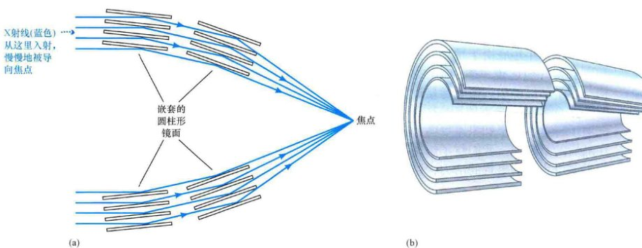(a) X射线望远镜里嵌套的镜面排列使X射线以掠射角反射并聚焦成像。(b) 镜面的三维剖面图，更清晰地显示出镜面形状。
另外，照相底片和CCD器件的探测模式不适合硬（高频）X射线和伽马射线。相反，轨道飞行器上搭载的电子探测器对单个光子进行计数，结果随后被传回地面，以便进行进一步的处理和分析。此外，宇宙中光子的数目似乎与它们的频率负相关。每秒钟有数万亿的可见光（星光）光子抵达地球上的光学望远镜的探测器中，但有时需要几小时甚至几天才能记录到一个伽马射线光子。这些光子不仅难以聚焦和测量，同时也非常稀缺。
NASA在1978年发射的爱因斯坦天文台，是第一个能够将其视场成像的X射线望远镜。在两年的寿命里，这个飞船为我们理解宇宙中的高能现象做出了重大贡献。1991年，德国ROSAT卫星（“伦琴卫星”的简写，以X射线的发现者威廉·伦琴命名）在它7年的寿命里，获得了大量高质量的观测数据。它在1999年停止运行，就在它的电子器件被不可挽回地损坏后几个月，当时望远镜意外地指向了过于靠近太阳的地方。
1999年7月，NASA发射了钱德拉X射线天文台（以印度天体物理学家苏布拉马尼扬·钱德拉塞卡命名，如图4.34所示）。钱德拉X射线天文台比爱因斯坦天文台和伦琴卫星的灵敏度更高、视场更大，并且分辨率更好，它为高能天文学家提供了新高度的观测细节。图4.35展示了钱德拉天文台拍摄的一幅典型图片：位于仙后座的一个超新星遗迹。在这个有名的仙后座A超新星遗迹里，喷射的气体不过是一颗在约320年前爆发的恒星残留到现在的物质。伪彩色图显示了恒星缕状喷射物质中温度高达5000万K的气体；残骸正中心的白色亮点可能是一个黑洞。

这里展示的钱德拉X射线望远镜正处在1998年最后的建造阶段。图4.33左图所示的镜面排列位于本图中卫星的底部。钱德拉的有效角分辨率是1"，使得望远镜能够拍摄与光学照片质量相当的照片。钱德拉天文台现在正高高运行在地球上方的椭圆轨道上，它距离地球最远约140,000km，几乎是到月球距离的1/3。[美国国家航空航天局 (NASA)]
XMM-牛顿卫星比钱德拉天文台对软X射线更敏感（也就是说，它能探测更暗的X射线源），但它的角分辨率太差 (5")（钱德拉天文台是0.5"），因此这两个项目彼此互补。
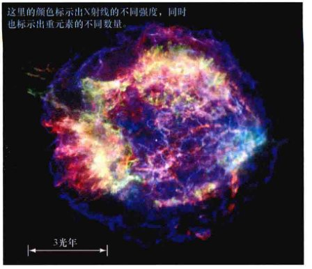这是一幅由钱德拉天文台拍摄的超新星遗迹仙后座A的X射线伪彩色图，这里是一个散落着碎片和热气体的残骸区域，它曾经是一颗大质量恒星一部分，距离地球约10000光年，在可见光波段上几乎不可见。仙后座A充斥着明亮的X射线辉光，散布在约10光年的范围内。[钱德拉X射线天文台/史密松天体物理观测台 (CXC/SAO)]
伽马射线天文学是观测天文学中最年轻的一员。正如刚才所说，能成像的伽马射线望远镜还不存在，因此只能进行相当粗糙 (1°分辨率) 的观测。然而，即使是用这样的分辨率，也能获得丰富的信息。宇宙伽马射线最早是在20世纪60年代由美国的船帆座系列卫星探测到的，它的主要任务是监控地球上的非法核爆炸。从那时起，一些X射线望远镜也配备有伽马射线探测器。
1991年，NASA的康普顿伽马射线天文台 (CGRO) 由航天飞机带入轨道。它扫描天空并尝试比之前更清晰地研究单个天体。许多CGRO拍摄的实例图片出现在本书中。当卫星的三个陀螺仪中的一个发生故障后，该项目在2000年6月4日被终止，NASA决定重新控制并让CGRO掉入太平洋。2008年，NASA发射了费米伽马射线空间望远镜，如图4.36(a)所示，它有着比CGRO更高的灵敏度和更广的伽马射线能量范围，从而大大地扩展了天文学家对高能宇宙的视野。图4.36(b)展示了来自遥远星系内部的一颗恒星剧烈爆炸后的伪彩色伽马射线图。费米伽马射线空间望远镜获得的早期的全天图像显示在图4.37(e)中。
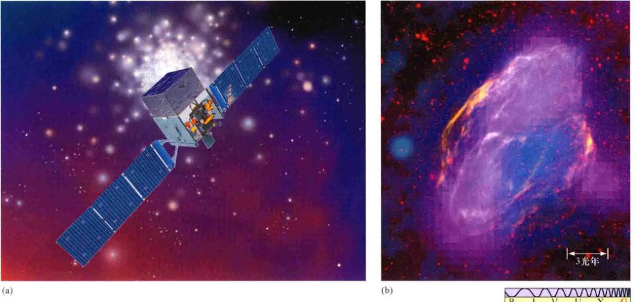(a) 艺术家眼里的费米伽马射线空间望远镜，它以意大利裔美籍科学家恩里科·费米的名字命名，他在高能物理领域做出了开创性的工作。宽宽的太阳能帆板为飞船提供电能，飞船中部的箱体有层状的钨，以探测伽马射线。(b) 一幅典型的伽马射线伪彩色图——这幅图展示了名为W44区域内的一个剧烈事件（超新星）的遗迹。这里主要用品红色表示伽马射线。[美国国家航空航天局 (NASA)]
4.8 全谱覆盖
现在在许多不同的电磁波段都在对大量天体进行着日常观测。随着本书内容的深入，我们将更充分地讨论高精度天文仪器能为我们提供的信息财富。
未来天文数据的质量和可用性将会有许多进一步的改进，许多新发现将会出现，这样的假设是合情合理的。当下正在发生和提出的科技进步为我们呈现出了以下令人激动的前景：在未来十年内，如果一切按计划进行，这是可能的——我们将有史以来第一次对任意天体在所有的波长范围内，从射电波段到伽马射线，同时进行高质量的观测。这一发展对我们认识宇宙运行机制的影响几乎是革命性的。
图4.37展示了我们银河系的一系列图片，作为可能的全谱覆盖的预览。这些图像来源于几个不同的仪器，波长从射电到伽马射线，时间跨度约20年。通过比较每个可见的特征，我们马上能看出多波段的观测能够互相补充，极大地扩展我们对周围的动态宇宙的感知。
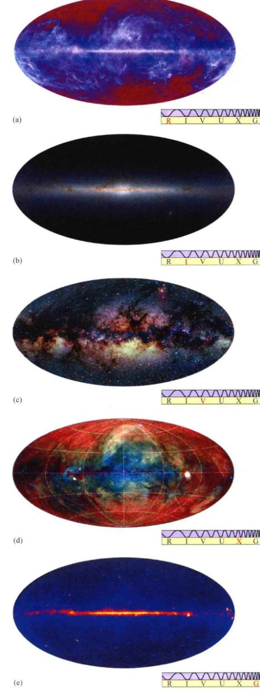(a) 射电波段、(b) 红外波段、(c) 可见光波段、(d) X射线波段和(e) 伽马射线波段的银河系。每幅图都是覆盖全天的全景图。我们银河系的中心位于人马星座方向，对应于每幅图的中心。[欧洲航天局 (ESO)、马萨诸塞大学 (UMass) / 加州理工学院 (Caltech)、A. 梅林格 (A.Mellinger)、马普射电天文研究所 (MPI)、美国国家航空航天局 (NASA)]
章节回顾
小结
- 1. 望远镜 (p.74) 设计用于收集来自于某个遥远源的尽可能多的光线，并将光传送给探测器以做详细研究。折射式望远镜 (p.74) 使用透镜集中和聚焦光线；反射式望远镜 (p.74) 使用的是镜面；牛顿式 (p.77) 和卡塞格林式 (p.77) 反射式望远镜设计使用副镜，以避免在主焦点放置探测器。
- 2. 望远镜的聚光能力取决于它的接收面积 (p.79)，正比于镜面直径的平方。为了研究最微弱的辐射源，天文学家必须要使用大型望远镜。同时，大型望远镜受到衍射效应的影响小，因此一旦能够克服地球大气的模糊效应，就能够实现更好的角分辨率 (p.80)。衍射的大小正比于所研究的辐射的波长，与镜面的尺寸成反比。
- 3. 大多数现代望远镜使用电荷耦合器件 (CCDs) (p.83) 来收集数据，而不是使用照相底片。视场被分为数以百万计的像素 (p.83)，当有光线照到时像素会累积电荷。CCDs比照相底片要灵敏许多倍，得到的数据易于直接数字化保存以用于后期处理。
- 4. 大多数地面望远镜的分辨率受到视宁度 (p.85) 的限制——视宁度是地球大气湍流产生的模糊效应，它使恒星的点状星象模糊成视直径为几角秒的视宁圆面 (p.85)。射电和太空望远镜不受这种效应的影响，因此它们的分辨率主要由衍射效应所决定。天文学家可以通过使用主动光学 (p.86) 和自适应光学 (p.86) 技术来大幅度提高望远镜的分辨率。
- 5. 尽管射电望远镜 (p.88) 的个头通常比光学望远镜要大得多，但它们在概念上类似于光学反射镜的构造。射电望远镜接收面积的大小是至关重要的，部分原因是因为从太空到达地面的射电辐射很少。射电望远镜的主要缺点是长波长的射电波产生的衍射限制了它们的分辨率。
- 6. 为了提高望远镜的有效面积，从而提高其分辨率，几个独立的望远镜可以组合成一个被称为干涉仪 (p.92) 的设备，由两个或多个探测器接收到的干涉图样可以用于重建源的高精度图像。
- 7. 红外望远镜 (p.95) 和紫外望远镜 (p.97) 的设计通常类似于光学系统。在地面上可以进行部分红外波段的观测，但紫外天文观测必须在太空才能进行。高能望远镜 (p.99) 研究X射线和伽马射线范围的电磁辐射。
终极问题
天文学是由数据推动的科学。最令人惊叹的发现往往是由刚运行的新望远镜做出的；一些望远镜个头很大，另一些在空间轨道上运行，并且几乎所有的新望远镜都比之前任何的望远镜都要好。最大的进步是建造了能够探测电磁波谱新范围的设备。是否总有一天望远镜能工作在电磁波谱外的范围，探测新类型的辐射或是某些依然未知的粒子？潜在的、全新的宇宙窗口在召唤我们。
复习与讨论
- L01 列出反射式望远镜的三个优点。
- L02 POS 指出天文学家不断建造越来越大的望远镜的两个原因。
- L03 CCD相比相片的优点是什么？
- L04 地球大气如何影响用光学望远镜所看到的东西？
- 哈勃太空望远镜 (HST) 相比地面望远镜有什么优点和缺点？
- 什么决定了地面望远镜的分辨率？
- 天文学家如何使用自适应光学来提高望远镜的分辨率？
- 为什么射电望远镜必须要建得很大？
- L05 哪些天体最适合使用射电方法来研究？
- L06 什么是干涉测量？它给射电天文学带来的问题是什么？它受限于射电天文学吗？
- 为什么红外卫星需要制冷？
- L07 地面上有紫外天文台吗？
- X射线望远镜的镜子和光学望远镜的镜面有什么不同？
- L08 POS 在多个不同波段研究天体的主要优点是什么？
- POS 我们眼睛对可见光的角分辨率为1'。假设我们的眼睛只能探测红外辐射，角分辨率为1°。那我们能在地球表面找到路吗？阅读呢？雕刻呢？能创造出科技吗？
概念自测：选择题
- 1. VIS 根据图4.2 (“折射透镜”)，最厚的透镜偏转光线：(a) 最快；(b) 最低；(c) 最大；(d) 最少。
- 2. 大多数用于专业研究的望远镜是反射式望远镜的主要原因是：(a) 镜面产生的图像比透镜产生的图像清晰；(b) 产生的图像是颠倒的；(c) 它们不会受到视宁度的影响；(d) 大型镜面的建造比大型透镜的建造要容易。
- 3. 如果望远镜的镜面可以奇形怪状，那么聚光能力最强的会是：(a) 边长为1m的三角镜面；(b) 边长为1m的正方形；(c) 直径为1m的圆；(d) 宽1m、两边长2m的矩形。
- 4. VIS 要使图4.12 (“分辨率”) 中的图像最清晰，波长与望远镜尺寸的比率：(a) 大；(b) 小；(c) 接近于1；(d) 以上都不是。
- 5. 专业天文台建造在高高山顶的首要原因是：(a) 远离城市灯光；(b) 在雨云之上；(c) 减小大气模糊；(d) 改进色差。
- 6. 相比射电望远镜，光学望远镜能够：(a) 看穿云层；(b) 在白天使用；(c) 分辨细节；(d) 看透星际尘埃。
- 7. 当多个射电望远镜用于干涉测量时，要最大限度地提高分辨能力，可以通过增加：(a) 望远镜之间的距离；(b) 给定面积内望远镜的数目；(c) 每个望远镜的直径；(d) 每个望远镜的电力供给。
- 8. 斯必泽空间望远镜 (SST) 被放置在远离地球的地方是因为：(a) 这能增大望远镜的视场；(b) 望远镜对地球上无线电台的电磁干扰敏感；(c) 这样可以避免地球大气带来的模糊效应；(d) 地球是个热源，而望远镜必须要保持非常冷的状态。
- 9. 要研究形成在星际尘埃云后的温暖 (1000 K) 的年轻恒星，最好的手段是：(a) X射线；(b) 红外线；(c) 紫外线；(d) 蓝光。
- 10. 研究在室女座星系团间发现的热（百万开尔文）气体的最佳频率位于电磁波的：(a) 射电波段；(b) 红外波段；(c) X射线；(d) 伽马射线。
问答
问题序号后的圆点表示题目的大致难度。
- ● 某个望远镜的视场是 $10' \times 10'$，用像素为 $2048 \times 2048$ 的CCD芯片记录。那么每一个像素对应天空多少角度？对于典型的视宁圆面（半径 $1"$），从像素角度来看，视直径为多少？
- ● SST的初始运行温度是5.5K。那么望远镜自身黑体辐射峰值的波长（以 μm 为单位）是多少？该波长与望远镜设计运行的波长范围相比如何？（详细说明2-2）
- ● 一台2m口径的望远镜在1h内能收集一定量的光线。在相同的观测条件下，一台口径为6m的望远镜需要多少时间就能完成同一观测？口径12m的望远镜呢？
- ● 对红光（波长为700nm），空间望远镜可以实现由衍射极限所决定的0.05"的角分辨率？那么该望远镜对(a)波长为3.5μm的红外线和(b) 140nm的紫外线的角分辨率是多少？
- ●● 两个大小一样的恒星以圆轨道互相绕转，轨道间距为2AU。该系统距离地球200光年远。如果我们碰巧垂直于轨道进行观测，那么我们需要多大的望远镜才能分辨两颗恒星？假设考虑波长为2μm的衍射极限。
- ● 两台独立的10m口径望远镜所组成的望远镜的等效直径是多少？四台单独的8m口径望远镜呢？
- ● 月球与地球的距离约380,000km。对SST (3")、HST (0.05") 和射电干涉仪 (0.001") 的角分辨率来说，这样的距离，望远镜对应的观测距离是多远？
- ● 请估计角分辨率：(a) 运行在5GHz频率上的5000km基线的射电干涉仪；(b) 工作在1μm波长的、基线为50m的红外干涉仪。
实践活动
协作项目
1. 你所在的小组被分配去观测猎户座附近的天区，以寻找隐藏在分子云中的炽热的、明亮的年轻恒星。书中所介绍的哪种望远镜是你的最好选择，并估计它预期能达到的清晰度。
2. 如果你和你的组员在各自的家里都放置一台口径为2m的射电望远镜，确定你们搭建的干涉仪最大是多少？它在1cm波长处的角分辨率是多少？
个人项目
1. 带上一些夜空的照片。你还需要一个晴朗、黝黑的夜晚，一台你能控制曝光时间的数码相机，一个三脚架和一根快门线，一块在黑暗中能读秒的手表。将你的相机设置成“手动”模式或者连接快门线以控制曝光时间；焦距设置为无限大。将相机指向你想拍摄的星座，从取景器里观看并曝光20~30s。不要碰触相机的任何部位或者在曝光期间紧握快门线以减少颤动。记录你的拍摄日志。
2. 你认为图4.37（多波段）中哪幅银河系图片提供了最有趣的信息？解释你的理由。